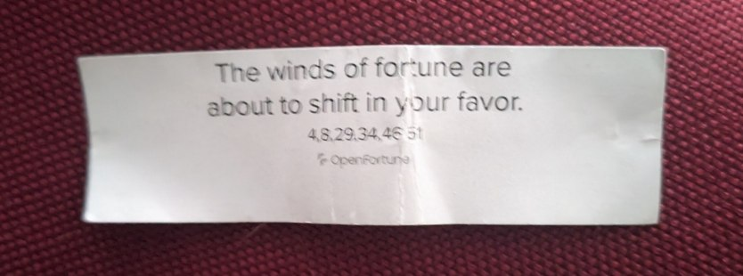
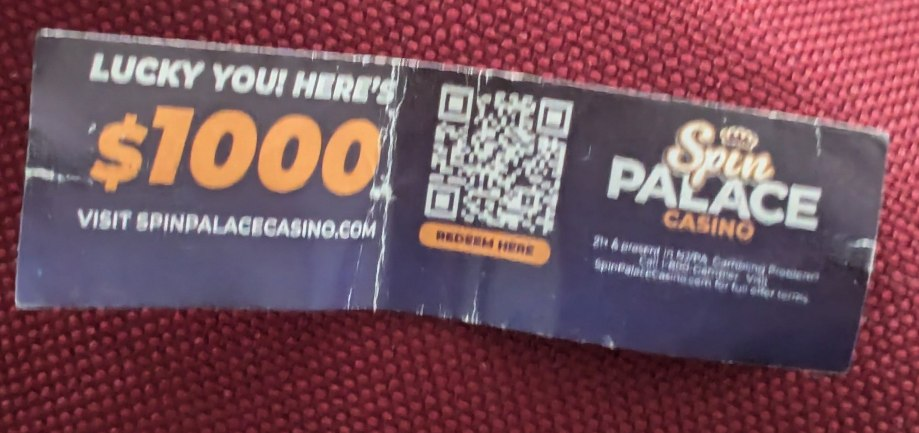

I wanted to just quickly write something here to get my thoughts on this out of my head. Hopefully it's somewhat followable:
About a week ago I was having some "trouble" getting the Pittsburgh bus system to work with my schedule (it never does) and decided to hike with my 20 pound backpack along East Carson Street to get to my girlfriend's house. After quite a bit of walking in the windy -17c cold snap I decided to stop in at Lin's Asian Fusion for some Mongolian Beef. It's not my favourite Chinese restaurant in Pittsburgh (I prefer spicier Sichuan cuisine), but the food is decent and it was on the way over. I couldn't really bargain with my frozen hands and ears at that point, anyway.
I cracked open my fortune cookie after I'd finished the beef, and the fortune read "the winds of fortune are about to shift in your favor." On the back of this piece of fortune paper was an ad for an online casino.
 Lame. Basically just an ad enticing me to go gambling online. Even the fortune was in on the ad. The sad part is that I can see this kind of thing working on so many people. These ads are all over the place these days and they're luring more and more victims into spending money on games they'll never win.
Gambling is negatively affecting Americans at an alarming rate as its legalization continues. Casinos, casino-style betting games and online "speculation markets" are excellent ways to siphon cash from the poor - and what is currently the middle class - upwards. It is no wonder legalization continues and sports betting ads are everywhere. There is big money to be made in the gambling industry if you are at the top of the chain.
In Pittsburgh, "skill games" - barely-above-board casino-type jackpot games - can be found pretty much everywhere, including in grocery stores. At my Shop 'n' Save, there's always one or two people sitting at them. They put them right at the front of the store to lure more people in. At the local Giant Eagle supermarkets, there are sections dedicated to these machines.
There is an argument that gambling legalization turns a grey-market area into something regulated and therefore protected, but this isn't how it plays out in reality, despite what X posters claim. Slot machines are in our grocery stores, all odds stacked against the player. Additionally, they are heavily advertised. Sports betting ads are also out of control. More people are gambling now than ever before.
For those reasons, I think it's really reckless to say that gambling legalization somehow helps gambling addicts. This is disingenuous and is absolutely not aligned with the hard data we are seeing post-legalization. More and more people are calling into gambling addiction hotlines as a result of legal and advertised gambling schemes.
Don't even get me started on casinos whose regulars are elderly folks with Social Security cheques. Even more grotesquely, you can place online bets under CFTC schemes on questions like "who visited a certain Caribbean island" or "will X country strike Y country before Z date." Politics be damned, any human with a shred of empathy in their system should find it baseline disgusting that it is legal to bet on this stuff. Unless, of course, they dream of running a casino or something, in which case I urge them to find peace lest they try to fit in by playing dirty and lose themselves in the process.
The hard truth about finding financial success in America is that you can either work very hard and fail repeatedly, play the volatility of the markets with money you already have, or take money from someone else and call that success. The gambling industry is designed to turn you into a victim of the latter strategy. Playing into it is a losing game. And you know, I am kind of a pragmatist; I am all for trying to make it and be financially successful in this system through various means, but I have great disdain for casino operators solely for the way casinos entice people into their rigged games. It's trickery. Enjoy your Corvette, I guess.
If there was ever a serious motion to ban "skill games," slot machines, and what they call "commodity futures trading" I would wholeheartedtly support it; there is growing evidence that legalizing and advertising gambling is only creating problems for the general population. I'd even like to see casinos in general stop operating. I'd classify a nationwide ban on gambling as an act of at least trying to do the most good given the circumstances. I guess my point is that unless it's a small card game between friends, gambling should be pushed back into the shadows. Its existence and the way it is being pushed is only serving to compound the struggle that most Americans are currently trying to survive through.